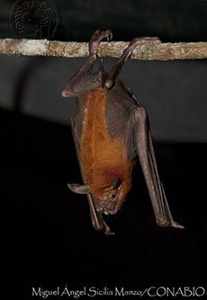
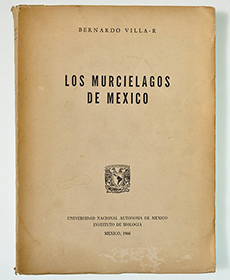
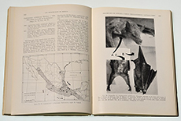

Referencias
- Horst, R.G. 1991. Bernardo Villa Ramírez: An introduction. Anales Inst. Bio. Univ. Nac. Autón. México. Ser. Zool. 62(2): 155-158.
- Cervantes, F.A. 1992. Nuestros Maestros. Tomo I. Dirección General de Asuntos del Personal Académico, UNAM. 254 pp.
- Salcedo, M.C. 2005. Bernardo Villa Ramírez. El señor de los murciélagos. ¿Cómo ves?, 74(7): 18.
Bernardo Villa Ramírez
1911 - 2006
Bernardo Villa Ramírez fue un destacado biólogo, pionero en el estudio de los mamíferos mexicanos. Nació en 1911 en Teloloapan, de Guerrero, y murió en el año 2006.
Su vida escolar y profesional comenzó en su estado natal, donde fue maestro rural. Posteriormente se trasladó a la Ciudad de México para continuar sus estudios. En 1940 cursó la carrera de Biología en la Facultad de Ciencias de la UNAM y en1947 obtuvo el grado de Maestro en Artes por la Universidad de Kansas, Estados Unidos. Regresó a México para realizar su doctorado en 1966 dedicado al estudio de los murciélagos del país. De esta forma contribuyó a sentar las bases para su clasificación y distribución geográfica, abarcando además aspectos relacionados con la economía y la salud, como la transmisión de la rabia por estos organismos.
Fue miembro de numerosas sociedades científicas dedicadas al estudio de los mamíferos, entre las que destacan la Sociedad Americana de Mastozóologos y la Asociación Méxicana de Mastozoología, A.C. Se preocupó por la conservación y protección de la naturaleza, fungiendo como Director de Fauna Silvestre del gobierno federal.
Publicó alrededor de 100 artículos científicos sobre distintos grupos de mamíferos, su distribución en el país y técnicas útiles para su estudio en campo. La mayoría se enfocan en los murciélagos, muchos sobre roedores, y en menor número tratan sobre cetáceos, lobos y coyotes, el venado cola blanca, lobos marinos, antílopes y monos.
Escribió varios libros entre los que se encuentran las magnas obras: Los mamíferos del Valle de México, 1953 y Los murciélagos de México, 1966.
Mis favoritos
- 
- Lagartija escamosa (Sceloporus aureolus)
- Foto: Miguel A. Sicilia Manzo / Banco de imágenes, CONABIO
Mis lugares
Mis ideas
- 
 - Los murciélagos de México, 1966.